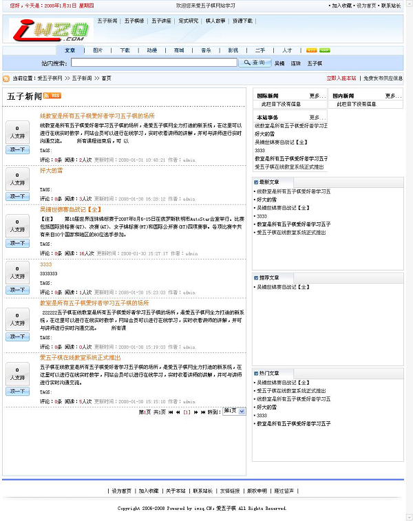
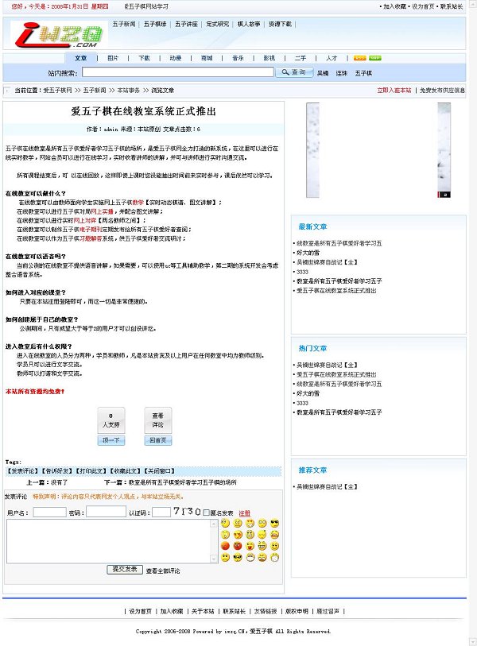

这样的系统如何？给点意见，关系到本站前途
#1 这样的系统如何？给点意见，关系到本站前途 作者：有志青年 发表时间：2008-1-31 13:48:48
一、首页：
二、栏目列表页：

三、内容显示页：
#2 Re:这样的系统如何？给点意见，关系到本站前途 作者：轻舞云间 发表时间：2008-1-31 14:04:34
 支持！
支持！
#3 Re:这样的系统如何？给点意见，关系到本站前途 作者：轻舞云间 发表时间：2008-1-31 14:08:08
顺便问一下，教室是有语音的吗？
#4 Re:这样的系统如何？给点意见，关系到本站前途 作者：有志青年 发表时间：2008-1-31 14:12:04
改版后的站点所拥有的功能和栏目：
文章系统【含现有爱五子棋所有内容】
资源下载【书籍下载、软件下载、习题下载】
博客空间【所有注册用户都拥有自己的博客】
圈子【注册用户可以创建圈子】
在线教室【在线教学系统，大讲坛】
棋谱库【列表显示所有棋谱，并可打包下载】
交流论坛【同现在的爱五子棋交流论坛】
最大的区别在于：
1、新系统有了博客这个概念，而实际上，写博客的五子棋爱好者很多，但不知道有多少愿意到这里落户；
2、新系统是一个彻头彻尾的文章系统，无论是列表页还是内容展示页都和现在的论坛系统有很大的区别
而其他都是一样的：
1、只是显示方式不一样，内容还是一样的。
2、甚至在思考是否将现有的论坛系统进行改造，全新制作首页、列表页、内容显示页，而核心不变。
要想的太多了。
今年的这个年不好过了，自寻烦恼呀。
#5 Re:这样的系统如何？给点意见，关系到本站前途 作者：有志青年 发表时间：2008-1-31 14:15:03
语音教室的语音目前可以使用uc来配合。
当初之所以开发这个教室系统，是为了将手头的n多orc课件转录到网上给更多的人随时查看。
这个“随时看”是我的出发点，所以语音功能被我排除了，因为语音的教学是很难回放的，数据量大、回放难以声图配合。
而语音教室的技术难题已经初步解决，也许后期会开发吧，但我个人不热衷，呵呵。
#6 Re:这样的系统如何？给点意见，关系到本站前途 作者：逆刃 发表时间：2008-1-31 14:22:02
已经非常喜欢这个论坛了。觉得还是不要变吧。要不可以论坛和网站统一。但是不知道效果和现在比哪个更好。
#7 Re:这样的系统如何？给点意见，关系到本站前途 作者：如果的事 发表时间：2008-1-31 14:35:52
 加油啊
加油啊
#8 Re:这样的系统如何？给点意见，关系到本站前途 作者：有志青年 发表时间：2008-1-31 18:16:48
如果凭借爱五子棋网现有的资源和能力采用这样的系统，那结果必将是成为五子棋的门户网站。
但，那样就不再是爱五子棋网站了！
吃自己碗里的饭，不抢别人的食。我想这样可能更有利于整个五子棋的发展，更有利于百花齐放吧。
说实话，那个系统我已经搞了将近一周了，不少功能已经非常熟悉了。
#9 Re:这样的系统如何？给点意见，关系到本站前途 作者：竹子 发表时间：2008-2-1 13:07:12
有志中彩了怎么的？准备了多大的空间资源啊？~
做博客，这里绝对比不了新浪网的，空间没那么大，功能没那么多，做成一半，还不如不做。
新浪博客要好过搜狐、网易、猫扑、百度等站的博客。
尤其是做棋类博客，新浪开放的支持动态棋谱发布的博客，大大地方便了棋友交流。
博客圈已经成为新浪的一大特色。
百度博客主要是解决了贴吧网友图片上传的问题。
#10 Re:这样的系统如何？给点意见，关系到本站前途 作者：147258 发表时间：2008-3-3 8:19:39
呵呵，还可以！#11 Re:这样的系统如何？给点意见，关系到本站前途 作者：汪洋孤舟 发表时间：2008-5-19 22:24:19
一直都想说这个问题，这个网站是我见过的质量最高的，在搜索引擎中排名也很不错，但是给人的第一感觉就是不够专业，我一直再想到底要怎么改，现在还没怎么想好，看了你的这个系统，感觉要比以前看起来好多了！专业性强了，重点也突出了，但是我感觉那个LOGO还是也改一下吧 ，怎么看都不爽！内容上以后在慢慢说，先照顾一下大面吧！呵呵！#12 Re:这样的系统如何？给点意见，关系到本站前途 作者：虎哥 发表时间：2008-9-5 15:44:20
不错啊
#13 Re:这样的系统如何？给点意见，关系到本站前途 作者：lfc 发表时间：2008-9-6 17:45:19
从南通到爱五子，好不容易熟悉了，再改啊！我们很难适应啊!
#14 Re:这样的系统如何？给点意见，关系到本站前途 作者：longfx 发表时间：2008-9-7 9:53:35
简单来看,就是想从单一论坛模式改到门户网站的形式.个人觉得交流互动性会下降.纯粹为了下载的用户会更多.#15 Re:这样的系统如何？给点意见，关系到本站前途 作者：longfx 发表时间：2008-9-7 9:58:22
另,本人极度反感语音课件.现有条件下,大批语音课程无法做到记录(即使有人愿意打谱,也没有文字说明).这种课程时效性相当差(很多听过就忘),不利于教学水平提高.
而对于一些社团来说,语音讲课只是为了吸引人气,对社团本身的长远发展并没有文字授课来得实在.
［ 有志青年 于 2008-9-7 12:28:24 时奖励此帖[金币加 20 威望加1］
#16 Re:这样的系统如何？给点意见，关系到本站前途 作者：lfc 发表时间：2008-9-8 22:17:31
同意上面的观点！还是不要改了吧！#17 Re:这样的系统如何？给点意见，关系到本站前途 作者：朝聖者 发表时间：2008-10-22 4:06:45
我就是一外行 P都没记下 只记得只是我第一个学习棋谱的家 我爱五子棋 我爱：wwww.iwzq.com 别人的家好 再好好不过自己的家` 爱怎么讲呢 大概就是好坏都认了 别打脸
别打脸
#18 Re:这样的系统如何？给点意见，关系到本站前途 作者：wrwak 发表时间：2008-11-4 14:14:45
能不能开发论坛插件 网页在线五子棋
#19 Re:这样的系统如何？给点意见，关系到本站前途 作者：wrwak 发表时间：2008-11-4 14:16:13
网络论坛空间可以找千脑要 1G初始空间 千脑论坛插件 提供附件上传
#20 Re:这样的系统如何？给点意见，关系到本站前途 作者：星月族 发表时间：2009-12-23 12:25:13
如何开通个人博客呢?